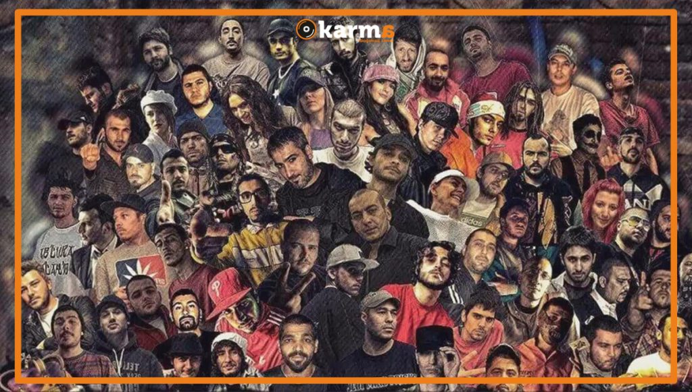

Türkçe Rap: Sesin Gücü ve Kültürel Yansıması

Türkçe rap, 1990’ların başından itibaren Türkiye’de doğan ve hızla büyüyen bir müzik türüdür. Kendi içerisinde birçok alt türü barındıran Türkçe rap, toplumsal meselelerden kişisel deneyimlere kadar geniş bir yelpazede konulara değinir. İşte Türkçe rap’in tarihçesi, önemli sanatçıları ve kültürel etkileri hakkında bir inceleme.
1. Tarihçe
Türkçe rap müziği, Türkiye'de 1990'ların başlarında yavaş yavaş popülerlik kazanmaya başladı. İlk örnekler arasında Ceza, Fuat ve Ayben gibi sanatçılar yer alır. Ceza'nın "Anahtar" adlı parçası, Türkçe rap’in çıkış noktalarından biri olarak kabul edilir. Bu dönemde, rap müziği genellikle underground sahnede yer aldı ve sokak kültürünü yansıtan sözlerle dikkat çekti.
2. Temalar ve İçerik
Türkçe rap, toplumsal sorunlar, adalet, eşitlik, aşk ve hayal kırıklığı gibi temaları işler. Sanatçılar, yaşadıkları çevrenin gerçeklerini ve duygularını ifade ederken, dinleyicilere sosyal eleştirilerde bulunur. Bu yönüyle Türkçe rap, sadece bir müzik türü değil, aynı zamanda bir sosyal hareket haline gelmiştir.
3. Önemli Sanatçılar
- *Ceza:* Türkçe rap’in en önemli isimlerinden biri olan Ceza, güçlü lirikleri ve hızlı ritmiyle tanınır. "Rapstar" ve "Yerli Plaka" gibi parçaları büyük beğeni toplamıştır.
- *Sagopa K:* Derin sözleri ve melankolik tarzıyla dikkat çeken Sagopa K, Türkçe rap’in en saygın sanatçılarındandır. "Bir Pesimistin Gözyaşları" albümü, onu fenomen haline getirmiştir.
- *Ben Fero:* Son dönemde genç nesil rapçilerden biri olarak öne çıkan Ben Fero, enerjik tarzı ve hit şarkılarıyla geniş bir dinleyici kitlesine ulaşmıştır.
- *Ezhel:* Trap müzik tarzında eserler veren Ezhel, "Made in Turkey" adlı parçasıyla büyük bir çıkış yakalamıştır. Genç dinleyicilerin ilgisini çeken bir diğer önemli isimdir.
4. Kültürel Etkiler
Türkçe rap, genç nesil için bir ifade aracı haline gelmiştir. Sosyal medyanın etkisiyle, müzik videoları ve şarkılar hızla yayılarak geniş kitlelere ulaşmaktadır. Bu durum, rap müziğin sadece müzik değil, aynı zamanda bir yaşam tarzı ve kültürel ifade biçimi olarak benimsenmesine yol açmıştır.
5. Gelecek
Türkçe rap, her geçen gün daha fazla sanatçının bu alana adım atmasıyla birlikte gelişmeye devam etmektedir. Yeni tarzlar ve alt türler ortaya çıkmakta, Türkçe rap’in sınırları genişlemektedir. Farklı kültürlerin ve müzik türlerinin etkisiyle, Türkçe rap’in evrimi sürmektedir.
Sonuç
Türkçe rap, kendine has ritmi, derin sözleri ve toplumsal duyarlılığıyla Türkiye’de önemli bir yer edinmiştir. Müzik dünyasının dinamiklerini değiştiren bu tür, gençlerin sesini duyurmasına ve toplumsal meseleleri dile getirmesine olanak tanımaktadır. Türkçe rap, sadece bir müzik türü değil, aynı zamanda bir kültürel hareket ve ifade biçimi olarak yaşamaya devam edecektir.
Nur Sena Karakaş
16.09.2024